2023 Higher Computing Science questions
Source: Scottish Qualifications Authority (SQA) / Qualifications Scotland. This is a StemInteract HTML companion, not an official HTML edition. Selectable text is supplied alongside original page images. Use the images or original PDF for equations, powers, fractions, vector notation, tables and diagrams; text extraction cannot fully preserve mathematical layout.
Jump to a question
PDF page 1
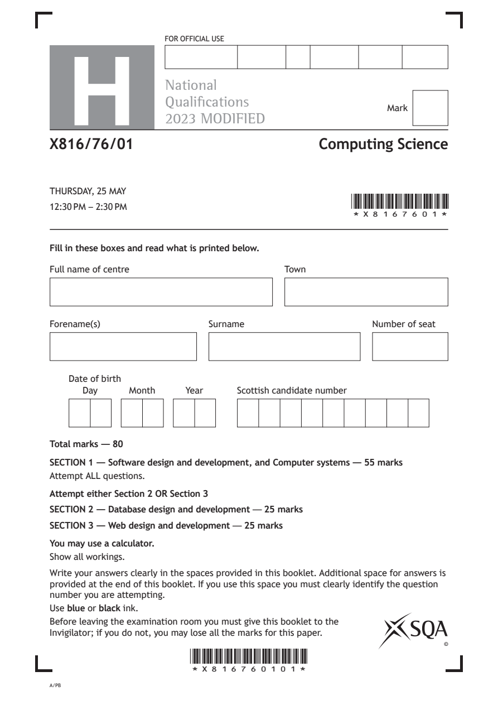
Selectable page text
FOR OFFICIAL USE
H
National
Qualications
Mark
2023 MODIFIED
X816/76/01 Computing Science
THURSDAY, 25 MAY
12:30 PM – 2:30 PM
*X8167601*
Fill in these boxes and read what is printed below.
Full name of centre Town
Forename(s) Surname Number of seat
Date of birth
Day Month Year Scottish candidate number
Total marks — 80
SECTION 1 — Software design and development, and Computer systems — 55 marks
Attempt ALL questions.
Attempt either Section 2 OR Section 3
SECTION 2 — Database design and development — 25 marks
SECTION 3 — Web design and development — 25 marks
You may use a calculator.
Show all workings.
Write your answers clearly in the spaces provided in this booklet. Additional space for answers is
provided at the end of this booklet. If you use this space you must clearly identify the question
number you are attempting.
Use blue or black ink.
Before leaving the examination room you must give this booklet to the
Invigilator; if you do not, you may lose all the marks for this paper.
©
*X816760101*
A/PBPDF page 2
Question 1Question 2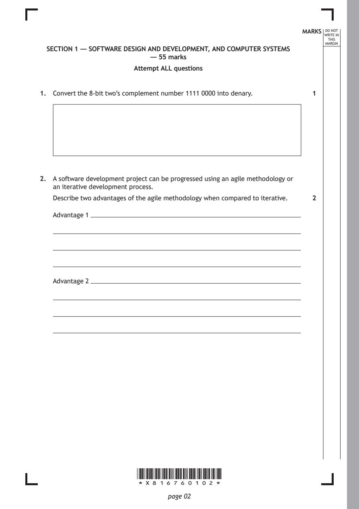
Selectable page text
MARKS DO NOT
WRITE IN
THIS
MARGIN
SECTION 1 — SOFTWARE DESIGN AND DEVELOPMENT, AND COMPUTER SYSTEMS
— 55 marks
Attempt ALL questions
1. Convert the 8-bit two’s complement number 1111 0000 into denary. 1
2. A software development project can be progressed using an agile methodology or
an iterative development process.
Describe two advantages of the agile methodology when compared to iterative. 2
Advantage 1
Advantage 2
*X816760102*
page 02PDF page 3
Question 3Question 4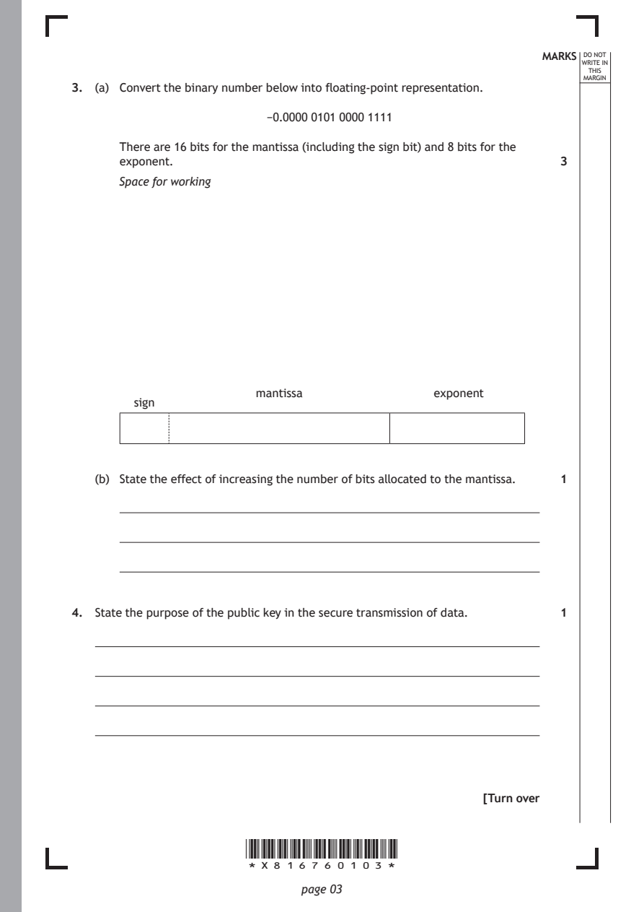
Selectable page text
MARKS DO NOT
WRITE IN
THIS
MARGIN
3. (a) Convert the binary number below into floating-point representation.
−0.0000 0101 0000 1111
There are 16 bits for the mantissa (including the sign bit) and 8 bits for the
exponent. 3
Space for working
mantissa exponent
sign
(b) State the effect of increasing the number of bits allocated to the mantissa. 1
4. State the purpose of the public key in the secure transmission of data. 1
[Turn over
*X816760103*
page 03PDF page 4
Question 5Question 6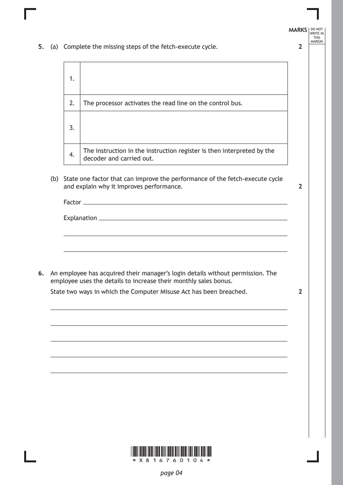
Selectable page text
MARKS DO NOT
WRITE IN
THIS
MARGIN
5. (a) Complete the missing steps of the fetch-execute cycle. 2
1.
2. The processor activates the read line on the control bus.
3.
The instruction in the instruction register is then interpreted by the
4.
decoder and carried out.
(b) State one factor that can improve the performance of the fetch-execute cycle
and explain why it improves performance. 2
Factor
Explanation
6. An employee has acquired their manager’s login details without permission. The
employee uses the details to increase their monthly sales bonus.
State two ways in which the Computer Misuse Act has been breached. 2
*X816760104*
page 04PDF page 5
Question 7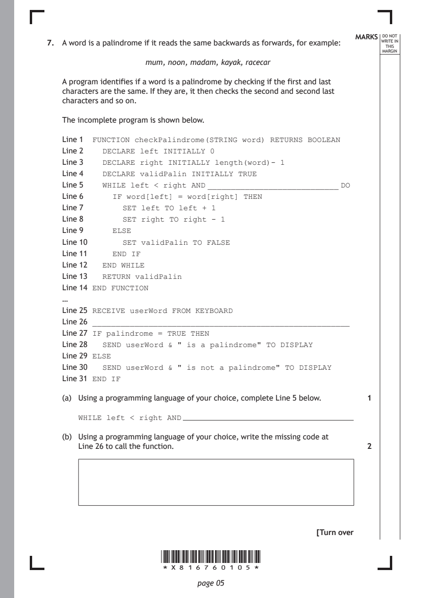
Selectable page text
MARKS DO NOT
7. A word is a palindrome if it reads the same backwards as forwards, for example: WRITE IN
THIS
MARGIN
mum, noon, madam, kayak, racecar
A program identifies if a word is a palindrome by checking if the first and last
characters are the same. If they are, it then checks the second and second last
characters and so on.
The incomplete program is shown below.
Line 1
FUNCTION checkPalindrome(STRING word) RETURNS BOOLEAN
Line 2
DECLARE left INITIALLY 0
Line 3
DECLARE right INITIALLY length(word)- 1
Line 4
DECLARE validPalin INITIALLY TRUE
Line 5
WHILE left < right AND ____________________________ DO
Line 6
IF word[left] = word[right] THEN
Line 7
SET left TO left + 1
Line 8
SET right TO right - 1
Line 9
ELSE
Line 10
SET validPalin TO FALSE
Line 11
END IF
Line 12
END WHILE
Line 13
RETURN validPalin
Line 14
END FUNCTION
…
Line 25
RECEIVE userWord FROM KEYBOARD
Line 26
_______________________________________________________
Line 27
IF palindrome = TRUE THEN
Line 28
SEND userWord & " is a palindrome" TO DISPLAY
Line 29
ELSE
Line 30
SEND userWord & " is not a palindrome" TO DISPLAY
Line 31
END IF
(a) Using a programming language of your choice, complete Line 5 below. 1
WHILE left < right AND
(b) Using a programming language of your choice, write the missing code at
Line 26 to call the function. 2
[Turn over
*X816760105*
page 05PDF page 6
Question 8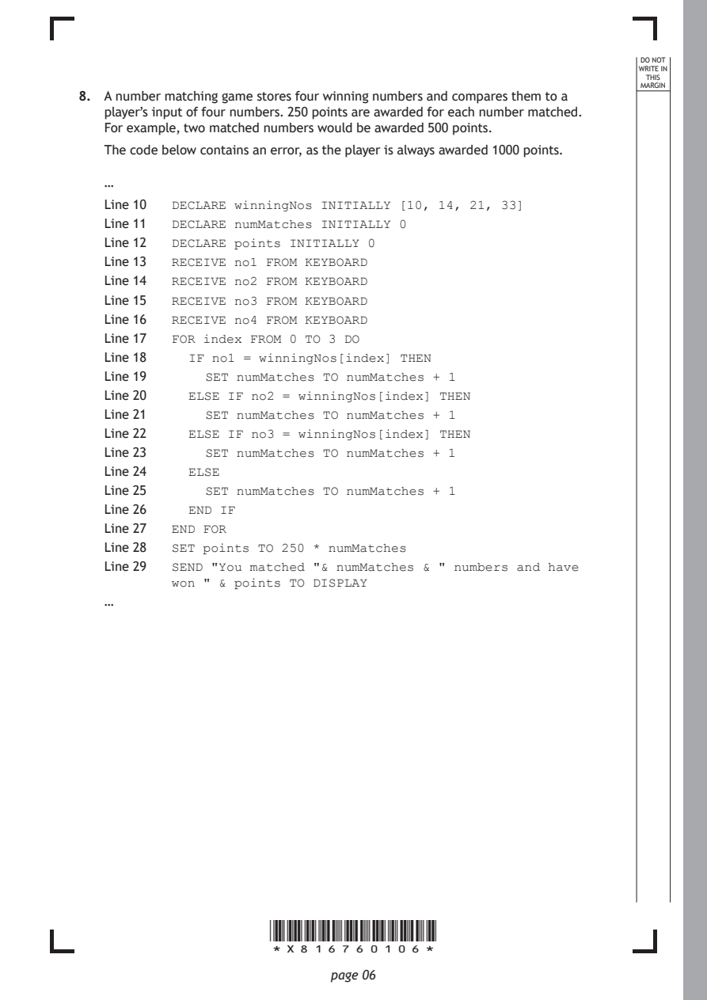
Selectable page text
DO NOT
WRITE IN
THIS
MARGIN
8. A number matching game stores four winning numbers and compares them to a
player’s input of four numbers. 250 points are awarded for each number matched.
For example, two matched numbers would be awarded 500 points.
The code below contains an error, as the player is always awarded 1000 points.
…
Line 10
DECLARE winningNos INITIALLY [10, 14, 21, 33]
Line 11
DECLARE numMatches INITIALLY 0
Line 12
DECLARE points INITIALLY 0
Line 13
RECEIVE no1 FROM KEYBOARD
Line 14
RECEIVE no2 FROM KEYBOARD
Line 15
RECEIVE no3 FROM KEYBOARD
Line 16
RECEIVE no4 FROM KEYBOARD
Line 17
FOR index FROM 0 TO 3 DO
Line 18
IF no1 = winningNos[index] THEN
Line 19
SET numMatches TO numMatches + 1
Line 20
ELSE IF no2 = winningNos[index] THEN
Line 21
SET numMatches TO numMatches + 1
Line 22
ELSE IF no3 = winningNos[index] THEN
Line 23
SET numMatches TO numMatches + 1
Line 24
ELSE
Line 25
SET numMatches TO numMatches + 1
Line 26
END IF
Line 27
END FOR
Line 28
SET points TO 250 * numMatches
Line 29
SEND "You matched "& numMatches & " numbers and have
won " & points TO DISPLAY
…
*X816760106*
page 06PDF page 7
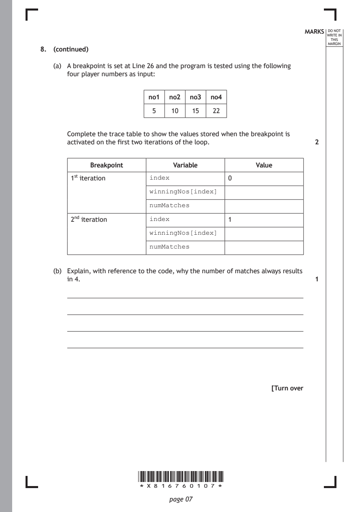
Selectable page text
MARKS DO NOT
WRITE IN
THIS
MARGIN
8. (continued)
(a) A breakpoint is set at Line 26 and the program is tested using the following
four player numbers as input:
no1 no2 no3 no4
5 10 15 22
Complete the trace table to show the values stored when the breakpoint is
activated on the first two iterations of the loop. 2
Breakpoint Variable Value
1st iteration 0
index
winningNos[index]
numMatches
2nd iteration 1
index
winningNos[index]
numMatches
(b) Explain, with reference to the code, why the number of matches always results
in 4. 1
[Turn over
*X816760107*
page 07PDF page 8
Question 9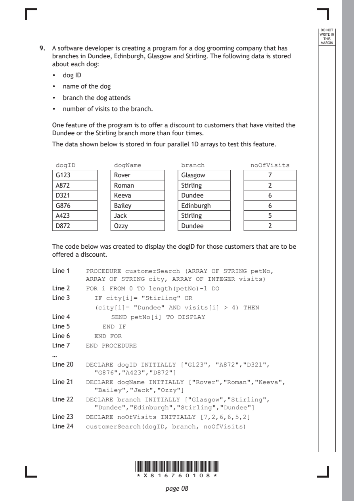
Selectable page text
DO NOT
WRITE IN
THIS
MARGIN
9. A software developer is creating a program for a dog grooming company that has
branches in Dundee, Edinburgh, Glasgow and Stirling. The following data is stored
about each dog:
• dog ID
• name of the dog
• branch the dog attends
• number of visits to the branch.
One feature of the program is to offer a discount to customers that have visited the
Dundee or the Stirling branch more than four times.
The data shown below is stored in four parallel 1D arrays to test this feature.
dogID dogName branch noOfVisits
G123 Rover Glasgow 7
A872 Roman Stirling 2
D321 Keeva Dundee 6
G876 Bailey Edinburgh 6
A423 Jack Stirling 5
D872 Ozzy Dundee 2
The code below was created to display the dogID for those customers that are to be
offered a discount.
Line 1
PROCEDURE customerSearch (ARRAY OF STRING petNo,
ARRAY OF STRING city, ARRAY OF INTEGER visits)
Line 2
FOR i FROM 0 TO length(petNo)-1 DO
Line 3
IF city[i]= "Stirling" OR
(city[i]= "Dundee" AND visits[i] > 4) THEN
Line 4
SEND petNo[i] TO DISPLAY
Line 5
END IF
Line 6
END FOR
Line 7
END PROCEDURE
…
Line 20
DECLARE dogID INITIALLY ["G123", "A872","D321",
"G876","A423","D872"]
Line 21
DECLARE dogName INITIALLY ["Rover","Roman","Keeva",
"Bailey","Jack","Ozzy"]
Line 22
DECLARE branch INITIALLY ["Glasgow","Stirling",
"Dundee","Edinburgh","Stirling","Dundee"]
Line 23
DECLARE noOfVisits INITIALLY [7,2,6,6,5,2]
Line 24
customerSearch(dogID, branch, noOfVisits)
*X816760108*
page 08PDF page 9
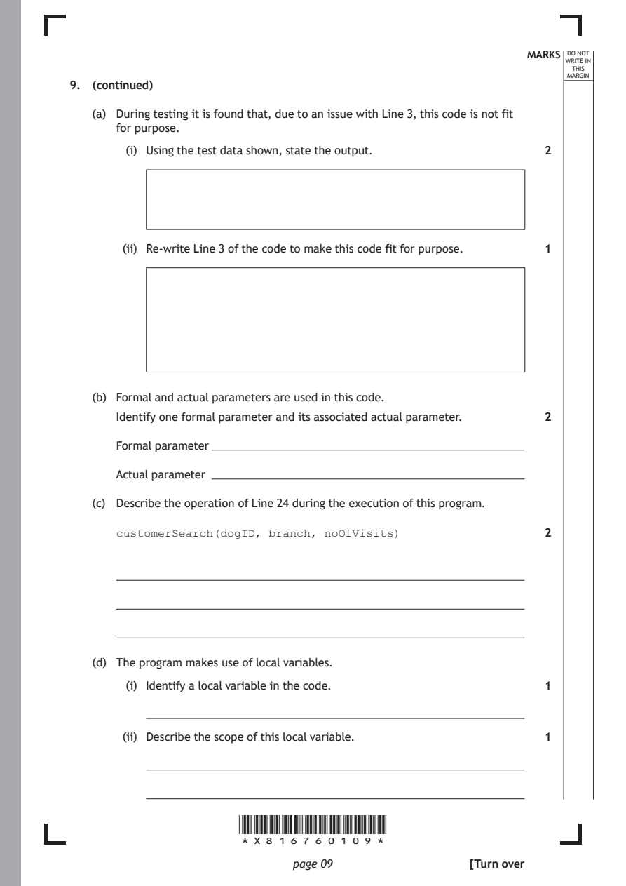
Selectable page text
MARKS DO NOT
WRITE IN
THIS
MARGIN
9. (continued)
(a) During testing it is found that, due to an issue with Line 3, this code is not fit
for purpose.
(i) Using the test data shown, state the output. 2
(ii) Re-write Line 3 of the code to make this code fit for purpose. 1
(b) Formal and actual parameters are used in this code.
Identify one formal parameter and its associated actual parameter. 2
Formal parameter
Actual parameter
(c) Describe the operation of Line 24 during the execution of this program.
2
customerSearch(dogID, branch, noOfVisits)
(d) The program makes use of local variables.
(i) Identify a local variable in the code. 1
(ii) Describe the scope of this local variable. 1
*X816760109*
page 09 [Turn overPDF page 10
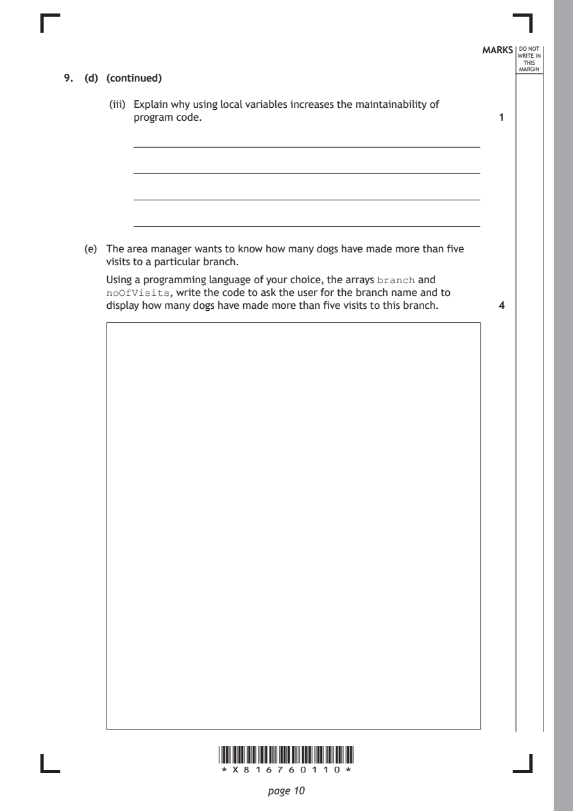
Selectable page text
MARKS DO NOT
WRITE IN
THIS
MARGIN
9. (d) (continued)
(iii) Explain why using local variables increases the maintainability of
program code. 1
(e) The area manager wants to know how many dogs have made more than five
visits to a particular branch.
Using a programming language of your choice, the arrays and
branch
, write the code to ask the user for the branch name and to
noOfVisits
display how many dogs have made more than five visits to this branch. 4
*X816760110*
page 10PDF page 11
Question 10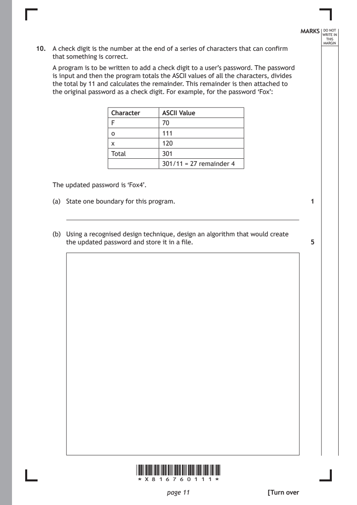
Selectable page text
MARKS DO NOT
WRITE IN
THIS
MARGIN
10. A check digit is the number at the end of a series of characters that can confirm
that something is correct.
A program is to be written to add a check digit to a user’s password. The password
is input and then the program totals the ASCII values of all the characters, divides
the total by 11 and calculates the remainder. This remainder is then attached to
the original password as a check digit. For example, for the password ‘Fox’:
Character ASCII Value
F 70
o 111
x 120
Total 301
301/11 = 27 remainder 4
The updated password is ‘Fox4’.
(a) State one boundary for this program. 1
(b) Using a recognised design technique, design an algorithm that would create
the updated password and store it in a file. 5
*X816760111*
page 11 [Turn overPDF page 12
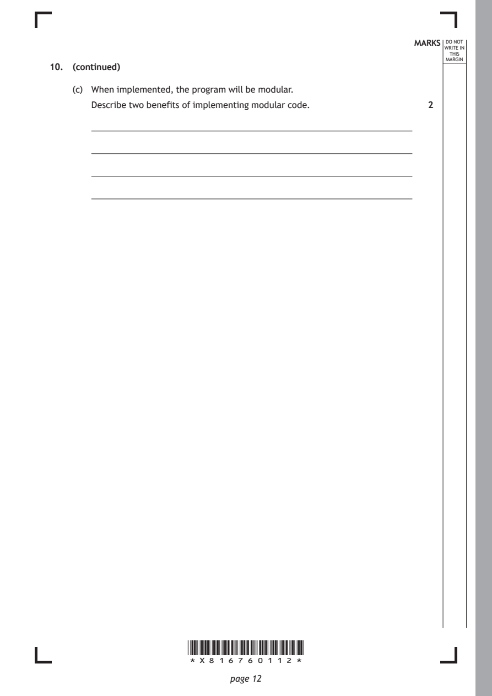
Selectable page text
MARKS DO NOT
WRITE IN
THIS
MARGIN
10. (continued)
(c) When implemented, the program will be modular.
Describe two benefits of implementing modular code. 2
*X816760112*
page 12PDF page 13
Question 11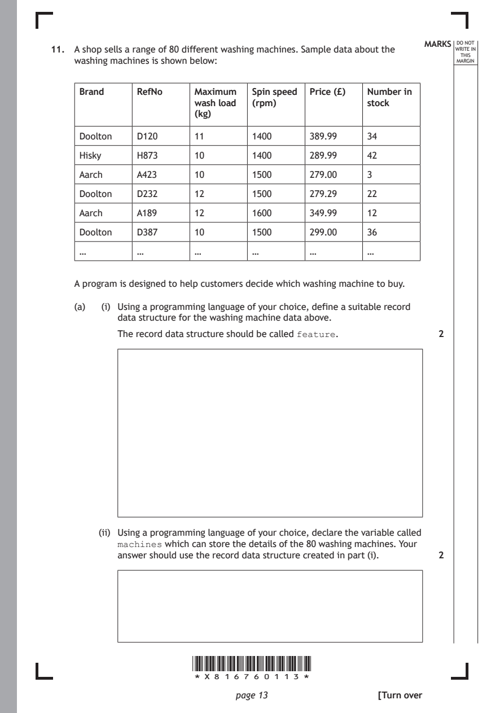
Selectable page text
MARKS DO NOT
11. A shop sells a range of 80 different washing machines. Sample data about the WRITE IN
THIS
washing machines is shown below: MARGIN
Brand RefNo Maximum Spin speed Price (£) Number in
wash load (rpm) stock
(kg)
Doolton D120 11 1400 389.99 34
Hisky H873 10 1400 289.99 42
Aarch A423 10 1500 279.00 3
Doolton D232 12 1500 279.29 22
Aarch A189 12 1600 349.99 12
Doolton D387 10 1500 299.00 36
… … … … … …
A program is designed to help customers decide which washing machine to buy.
(a) (i) Using a programming language of your choice, define a suitable record
data structure for the washing machine data above.
The record data structure should be called . 2
feature
(ii) Using a programming language of your choice, declare the variable called
which can store the details of the 80 washing machines. Your
machines
answer should use the record data structure created in part (i). 2
*X816760113*
page 13 [Turn overPDF page 14
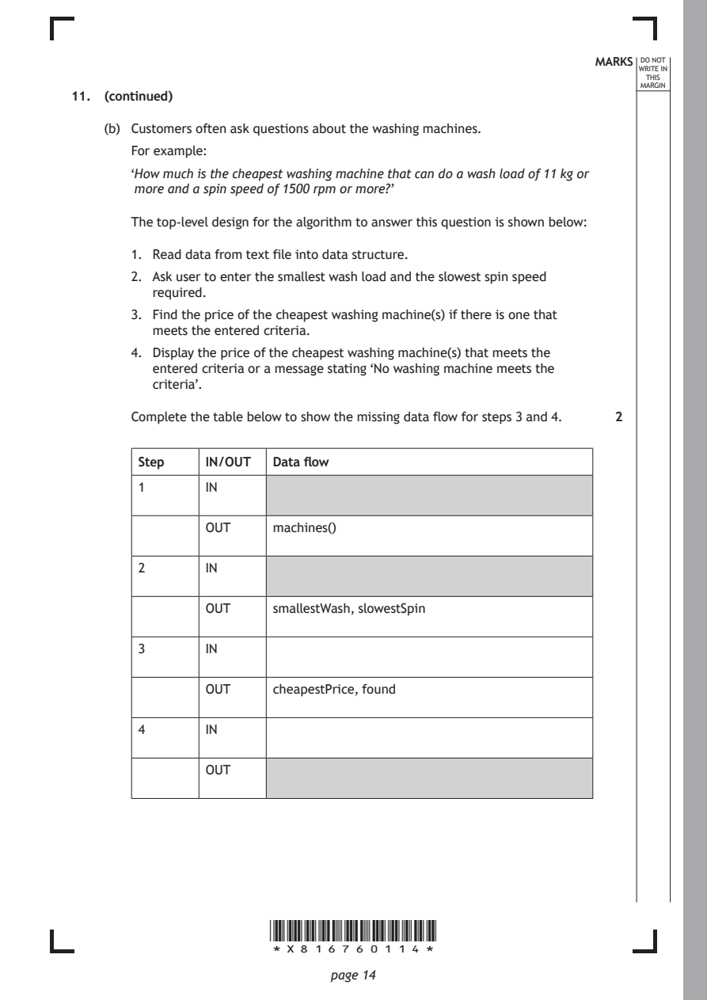
Selectable page text
MARKS DO NOT
WRITE IN
THIS
MARGIN
11. (continued)
(b) Customers often ask questions about the washing machines.
For example:
‘ How much is the cheapest washing machine that can do a wash load of 11 kg or
more and a spin speed of 1500 rpm or more?’
The top-level design for the algorithm to answer this question is shown below:
1. Read data from text file into data structure.
2. Ask user to enter the smallest wash load and the slowest spin speed
required.
3. Find the price of the cheapest washing machine(s) if there is one that
meets the entered criteria.
4. Display the price of the cheapest washing machine(s) that meets the
entered criteria or a message stating ‘No washing machine meets the
criteria’.
Complete the table below to show the missing data flow for steps 3 and 4. 2
Step IN/OUT Data flow
1 IN
OUT machines()
2 IN
OUT smallestWash, slowestSpin
3 IN
OUT cheapestPrice, found
4 IN
OUT
*X816760114*
page 14PDF page 15
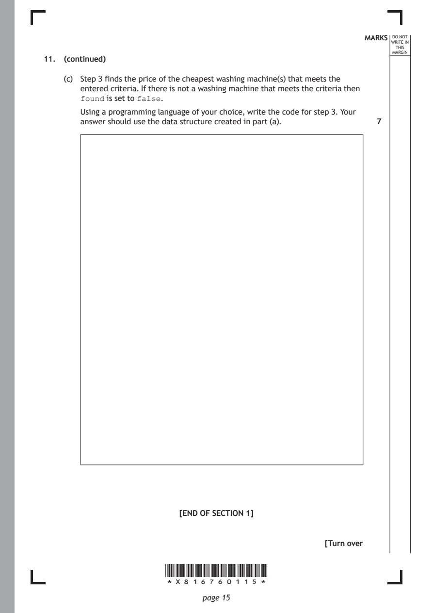
Selectable page text
MARKS DO NOT
WRITE IN
THIS
MARGIN
11. (continued)
(c) Step 3 finds the price of the cheapest washing machine(s) that meets the
entered criteria. If there is not a washing machine that meets the criteria then
is set to .
found false
Using a programming language of your choice, write the code for step 3. Your
answer should use the data structure created in part (a). 7
[END OF SECTION 1]
[Turn over
*X816760115*
page 15PDF page 16
Question 12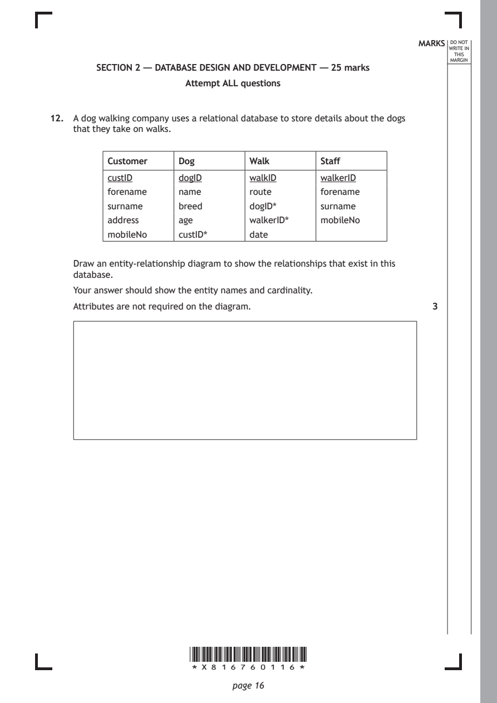
Selectable page text
MARKS DO NOT
WRITE IN
THIS
MARGIN
SECTION 2 — DATABASE DESIGN AND DEVELOPMENT — 25 marks
Attempt ALL questions
12. A dog walking company uses a relational database to store details about the dogs
that they take on walks.
Customer Dog Walk Staff
custID dogID walkID walkerID
forename name route forename
surname breed dogID* surname
address age walkerID* mobileNo
mobileNo custID* date
Draw an entity-relationship diagram to show the relationships that exist in this
database.
Your answer should show the entity names and cardinality.
Attributes are not required on the diagram. 3
*X816760116*
page 16PDF page 17
Question 13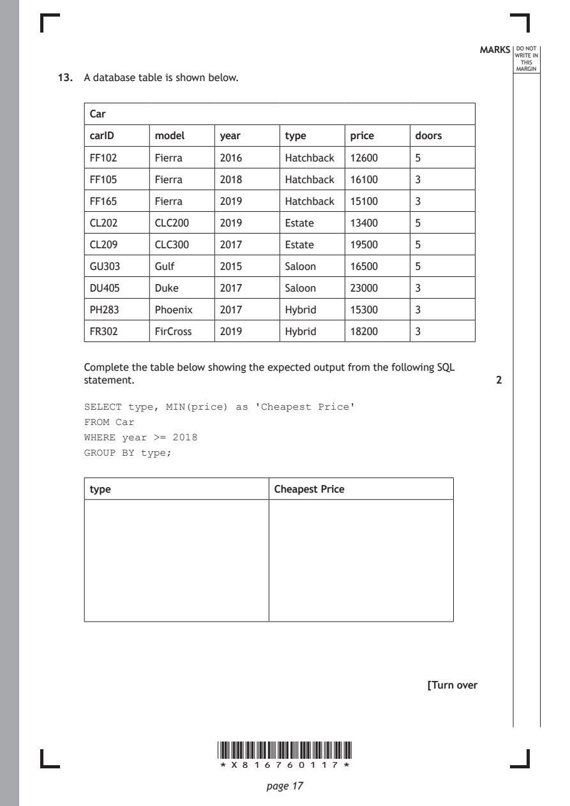
Selectable page text
MARKS DO NOT
WRITE IN
THIS
MARGIN
13. A database table is shown below.
Car
carID model year type price doors
FF102 Fierra 2016 Hatchback 12600 5
FF105 Fierra 2018 Hatchback 16100 3
FF165 Fierra 2019 Hatchback 15100 3
CL202 CLC200 2019 Estate 13400 5
CL209 CLC300 2017 Estate 19500 5
GU303 Gulf 2015 Saloon 16500 5
DU405 Duke 2017 Saloon 23000 3
PH283 Phoenix 2017 Hybrid 15300 3
FR302 FirCross 2019 Hybrid 18200 3
Complete the table below showing the expected output from the following SQL
statement. 2
SELECT type, MIN(price) as 'Cheapest Price'
FROM Car
WHERE year >= 2018
GROUP BY type;
type Cheapest Price
[Turn over
*X816760117*
page 17PDF page 18
Question 14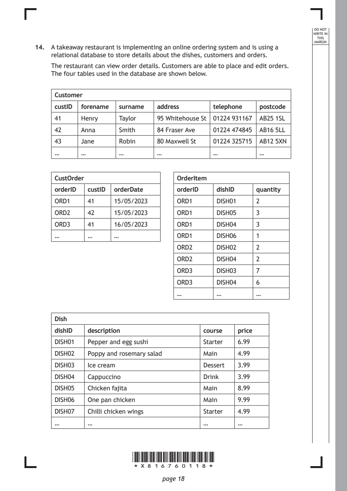
Selectable page text
DO NOT
WRITE IN
THIS
MARGIN
14. A takeaway restaurant is implementing an online ordering system and is using a
relational database to store details about the dishes, customers and orders.
The restaurant can view order details. Customers are able to place and edit orders.
The four tables used in the database are shown below.
Customer
custID forename surname address telephone postcode
41 Henry Taylor 95 Whitehouse St 01224 931167 AB25 1SL
42 Anna Smith 84 Fraser Ave 01224 474845 AB16 5LL
43 Jane Robin 80 Maxwell St 01224 325715 AB12 5XN
… … … … … …
CustOrder OrderItem
orderID custID orderDate orderID dishID quantity
ORD1 41 15/05/2023 ORD1 DISH01 2
ORD2 42 15/05/2023 ORD1 DISH05 3
ORD3 41 16/05/2023 ORD1 DISH04 3
… … … ORD1 DISH06 1
ORD2 DISH02 2
ORD2 DISH04 2
ORD3 DISH03 7
ORD3 DISH04 6
… … …
Dish
dishID description course price
DISH01 Pepper and egg sushi Starter 6.99
DISH02 Poppy and rosemary salad Main 4.99
DISH03 Ice cream Dessert 3.99
DISH04 Cappuccino Drink 3.99
DISH05 Chicken fajita Main 8.99
DISH06 One pan chicken Main 9.99
DISH07 Chilli chicken wings Starter 4.99
… … … …
*X816760118*
page 18PDF page 19
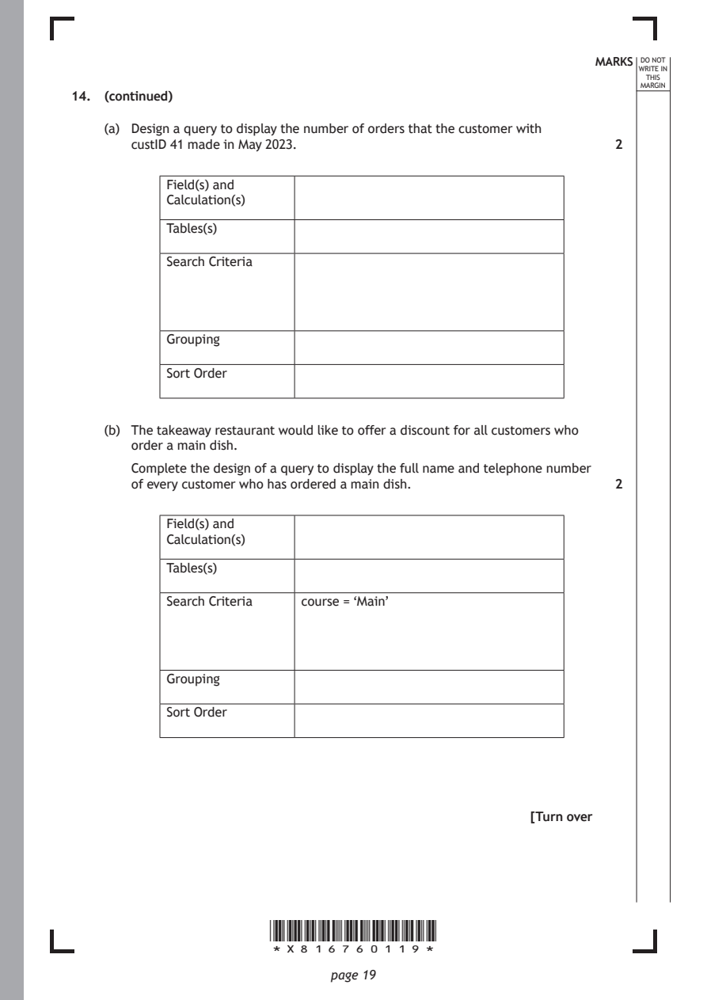
Selectable page text
MARKS DO NOT
WRITE IN
THIS
MARGIN
14. (continued)
(a) Design a query to display the number of orders that the customer with
custID 41 made in May 2023. 2
Field(s) and
Calculation(s)
Tables(s)
Search Criteria
Grouping
Sort Order
(b) The takeaway restaurant would like to offer a discount for all customers who
order a main dish.
Complete the design of a query to display the full name and telephone number
of every customer who has ordered a main dish. 2
Field(s) and
Calculation(s)
Tables(s)
Search Criteria course = ‘Main’
Grouping
Sort Order
[Turn over
*X816760119*
page 19PDF page 20
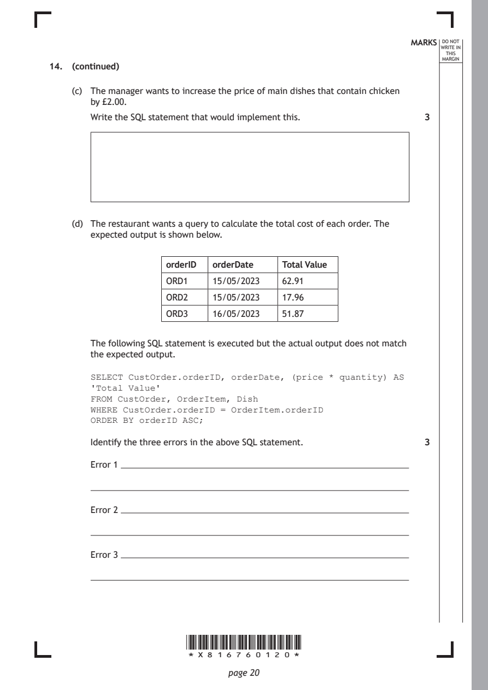
Selectable page text
MARKS DO NOT
WRITE IN
THIS
MARGIN
14. (continued)
(c) The manager wants to increase the price of main dishes that contain chicken
by £2.00.
Write the SQL statement that would implement this. 3
(d) The restaurant wants a query to calculate the total cost of each order. The
expected output is shown below.
orderID orderDate Total Value
ORD1 15/05/2023 62.91
ORD2 15/05/2023 17.96
ORD3 16/05/2023 51.87
The following SQL statement is executed but the actual output does not match
the expected output.
SELECT CustOrder.orderID, orderDate, (price * quantity) AS
'Total Value'
FROM CustOrder, OrderItem, Dish
WHERE CustOrder.orderID = OrderItem.orderID
ORDER BY orderID ASC;
Identify the three errors in the above SQL statement. 3
Error 1
Error 2
Error 3
*X816760120*
page 20PDF page 21
Question 15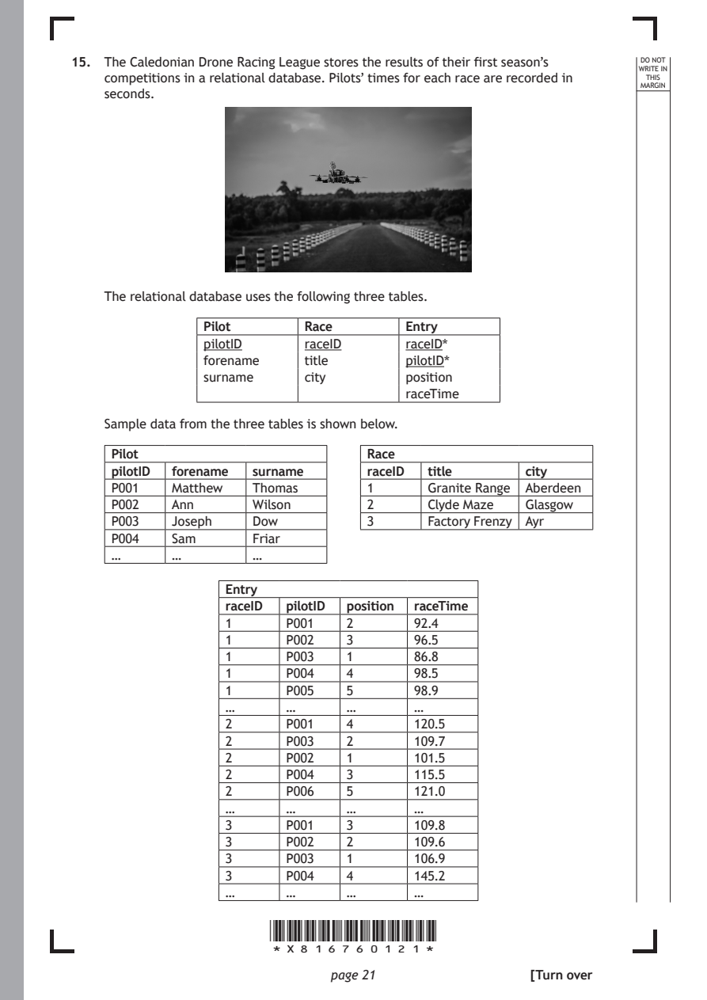
Selectable page text
15. The Caledonian Drone Racing League stores the results of their first season’s DO NOT
WRITE IN
competitions in a relational database. Pilots’ times for each race are recorded in THIS
MARGIN
seconds.
The relational database uses the following three tables.
Pilot Race Entry
pilotID raceID raceID*
forename title pilotID*
surname city position
raceTime
Sample data from the three tables is shown below.
Pilot Race
pilotID forename surname raceID title city
P001 Matthew Thomas 1 Granite Range Aberdeen
P002 Ann Wilson 2 Clyde Maze Glasgow
P003 Joseph Dow 3 Factory Frenzy Ayr
P004 Sam Friar
… … …
Entry
raceID pilotID position raceTime
1 P001 2 92.4
1 P002 3 96.5
1 P003 1 86.8
1 P004 4 98.5
1 P005 5 98.9
… … … …
2 P001 4 120.5
2 P003 2 109.7
2 P002 1 101.5
2 P004 3 115.5
2 P006 5 121.0
… … … …
3 P001 3 109.8
3 P002 2 109.6
3 P003 1 106.9
3 P004 4 145.2
… … … …
*X816760121*
page 21 [Turn overPDF page 22
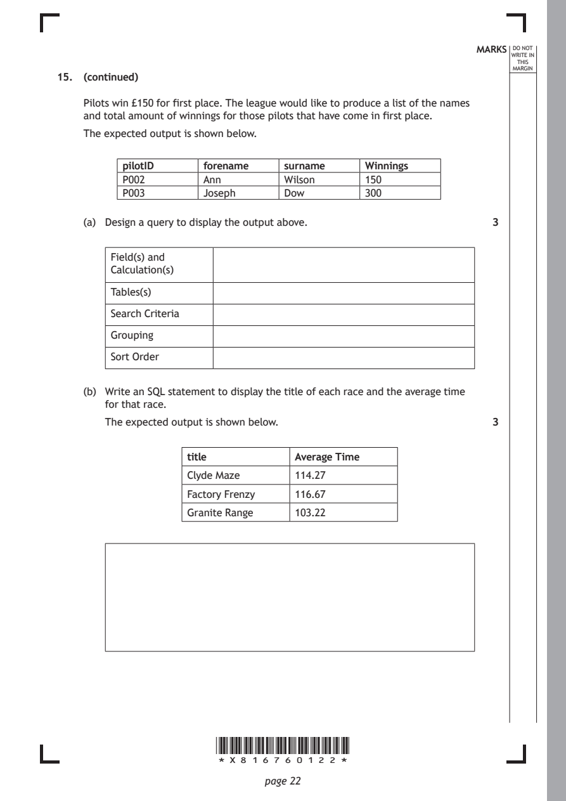
Selectable page text
MARKS DO NOT
WRITE IN
THIS
MARGIN
15. (continued)
Pilots win £150 for first place. The league would like to produce a list of the names
and total amount of winnings for those pilots that have come in first place.
The expected output is shown below.
pilotID forename surname Winnings
P002 Ann Wilson 150
P003 Joseph Dow 300
(a) Design a query to display the output above. 3
Field(s) and
Calculation(s)
Tables(s)
Search Criteria
Grouping
Sort Order
(b) Write an SQL statement to display the title of each race and the average time
for that race.
The expected output is shown below. 3
title Average Time
Clyde Maze 114.27
Factory Frenzy 116.67
Granite Range 103.22
*X816760122*
page 22PDF page 23
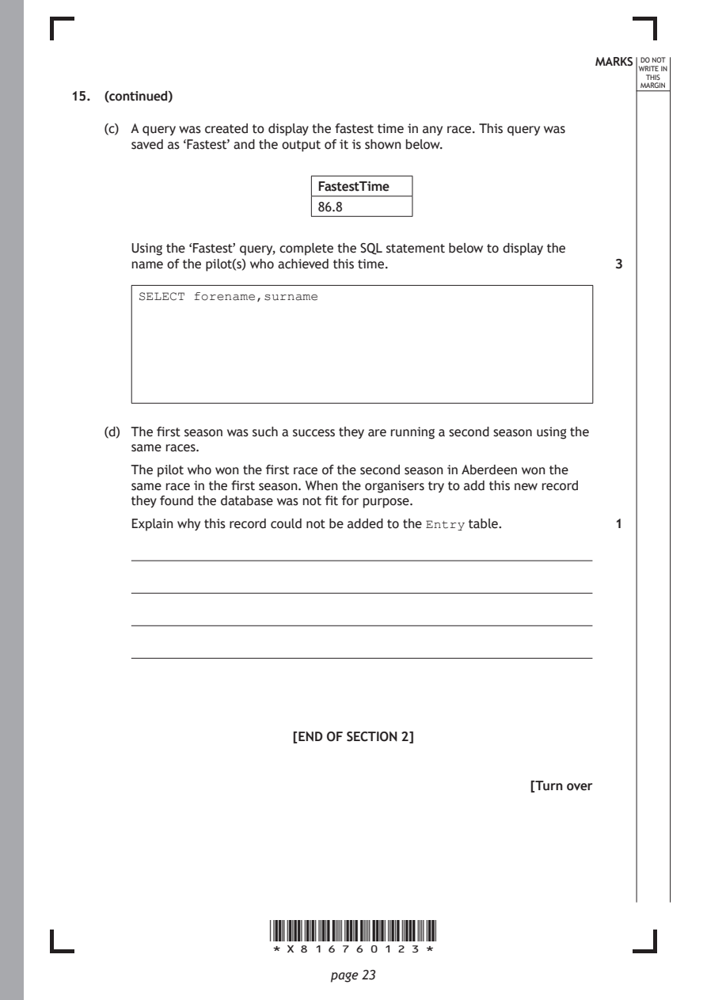
Selectable page text
MARKS DO NOT
WRITE IN
THIS
MARGIN
15. (continued)
(c) A query was created to display the fastest time in any race. This query was
saved as ‘Fastest’ and the output of it is shown below.
FastestTime
86.8
Using the ‘Fastest’ query, complete the SQL statement below to display the
name of the pilot(s) who achieved this time. 3
SELECT forename,surname
(d) The first season was such a success they are running a second season using the
same races.
The pilot who won the first race of the second season in Aberdeen won the
same race in the first season. When the organisers try to add this new record
they found the database was not fit for purpose.
Explain why this record could not be added to the table. 1
Entry
[END OF SECTION 2]
[Turn over
*X816760123*
page 23PDF page 24
Question 16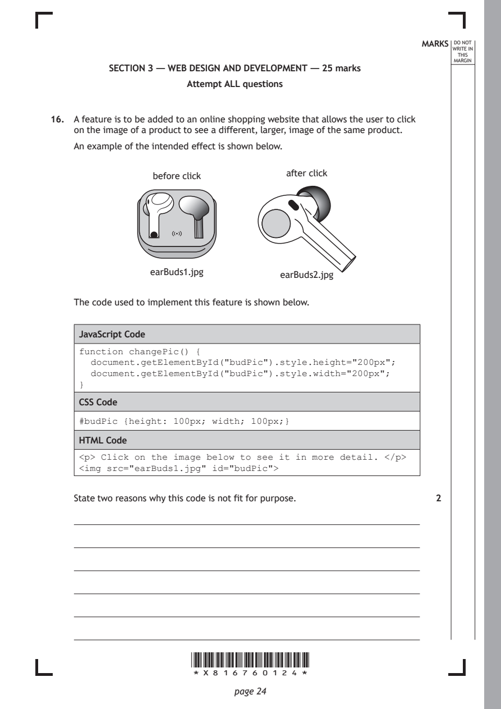
Selectable page text
MARKS DO NOT
WRITE IN
THIS
MARGIN
SECTION 3 — WEB DESIGN AND DEVELOPMENT — 25 marks
Attempt ALL questions
16. A feature is to be added to an online shopping website that allows the user to click
on the image of a product to see a different, larger, image of the same product.
An example of the intended effect is shown below.
after click
before click
earBuds1.jpg
earBuds2.jpg
The code used to implement this feature is shown below.
JavaScript Code
function changePic() {
document.getElementById("budPic").style.height="200px";
document.getElementById("budPic").style.width="200px";
}
CSS Code
#budPic {height: 100px; width; 100px;}
HTML Code
<p> Click on the image below to see it in more detail. </p>
<img src="earBuds1.jpg" id="budPic">
State two reasons why this code is not fit for purpose. 2
*X816760124*
page 24PDF page 25
Question 17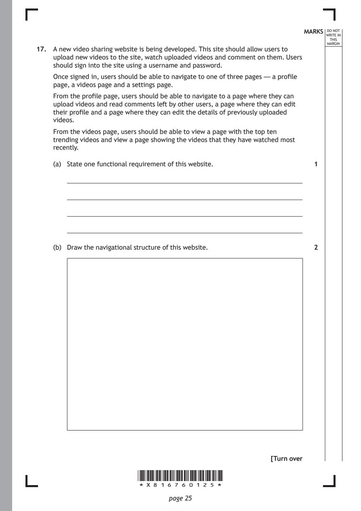
Selectable page text
MARKS DO NOT
WRITE IN
THIS
MARGIN
17. A new video sharing website is being developed. This site should allow users to
upload new videos to the site, watch uploaded videos and comment on them. Users
should sign into the site using a username and password.
Once signed in, users should be able to navigate to one of three pages — a profile
page, a videos page and a settings page.
From the profile page, users should be able to navigate to a page where they can
upload videos and read comments left by other users, a page where they can edit
their profile and a page where they can edit the details of previously uploaded
videos.
From the videos page, users should be able to view a page with the top ten
trending videos and view a page showing the videos that they have watched most
recently.
(a) State one functional requirement of this website. 1
(b) Draw the navigational structure of this website. 2
[Turn over
*X816760125*
page 25PDF page 26
Question 18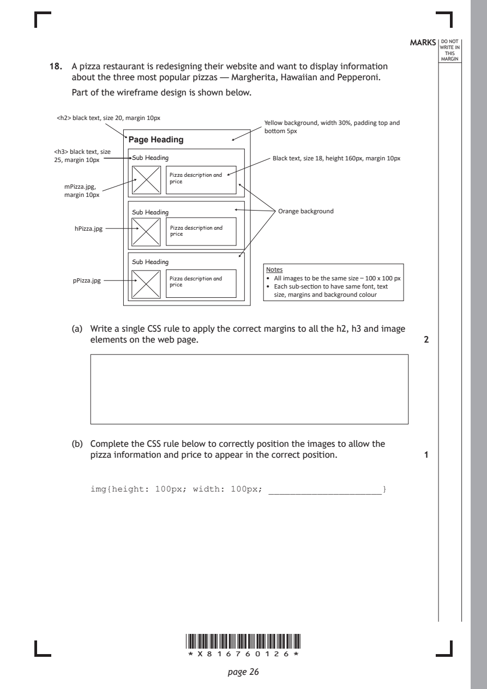
Selectable page text
MARKS DO NOT
WRITE IN
THIS
MARGIN
18. A pizza restaurant is redesigning their website and want to display information
about the three most popular pizzas — Margherita, Hawaiian and Pepperoni.
Part of the wireframe design is shown below.
<h2> black text, size 20, margin 10px
Yellow background, width 30%, padding top and
bo�om 5px
Page Heading
<h3> black text, size
25, margin 10px Sub Heading Black text, size 18, height 160px, margin 10px
Pizza description and
price
mPizza.jpg,
margin 10px
Sub Heading Orange background
hPizza.jpg Pizza description and
price
Sub Heading
Notes
pPizza.jpg Pizza description and • All images to be the same size – 100 x 100 px
price • Each sub-sec�on to have same font, text
size, margins and background colour
(a) Write a single CSS rule to apply the correct margins to all the h2, h3 and image
elements on the web page. 2
(b) Complete the CSS rule below to correctly position the images to allow the
pizza information and price to appear in the correct position. 1
img{height: 100px; width: 100px; _____________________}
*X816760126*
page 26PDF page 27
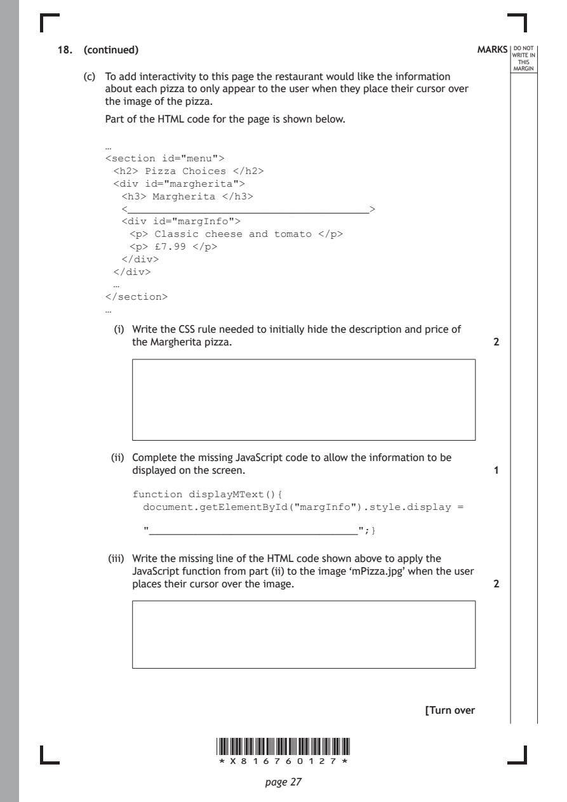
Selectable page text
18. (continued) MARKS DO NOT
WRITE IN
THIS
MARGIN
(c) To add interactivity to this page the restaurant would like the information
about each pizza to only appear to the user when they place their cursor over
the image of the pizza.
Part of the HTML code for the page is shown below.
…
<section id="menu">
<h2> Pizza Choices </h2>
<div id="margherita">
<h3> Margherita </h3>
____________________________________________
< >
<div id="margInfo">
<p> Classic cheese and tomato </p>
<p> £7.99 </p>
</div>
</div>
…
</section>
…
(i) Write the CSS rule needed to initially hide the description and price of
the Margherita pizza. 2
(ii) Complete the missing JavaScript code to allow the information to be
displayed on the screen. 1
function displayMText(){
document.getElementById("margInfo").style.display =
______________________________________
" ";}
(iii) Write the missing line of the HTML code shown above to apply the
JavaScript function from part (ii) to the image ‘mPizza.jpg’ when the user
places their cursor over the image. 2
[Turn over
*X816760127*
page 27PDF page 28
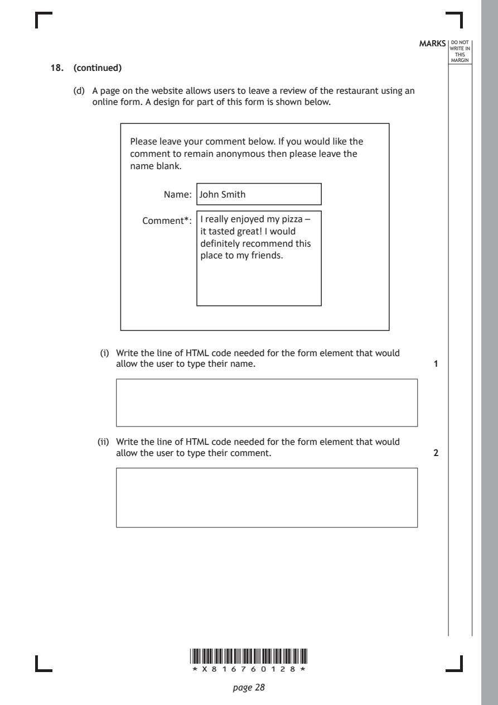
Selectable page text
MARKS DO NOT
WRITE IN
THIS
MARGIN
18. (continued)
(d) A page on the website allows users to leave a review of the restaurant using an
online form. A design for part of this form is shown below.
Please leave your comment below. If you would like the
comment to remain anonymous then please leave the
name blank.
Name: John Smith
Comment*: I really enjoyed my pizza –
it tasted great! I would
definitely recommend this
place to my friends.
(i) Write the line of HTML code needed for the form element that would
allow the user to type their name. 1
(ii) Write the line of HTML code needed for the form element that would
allow the user to type their comment. 2
*X816760128*
page 28PDF page 29
Question 19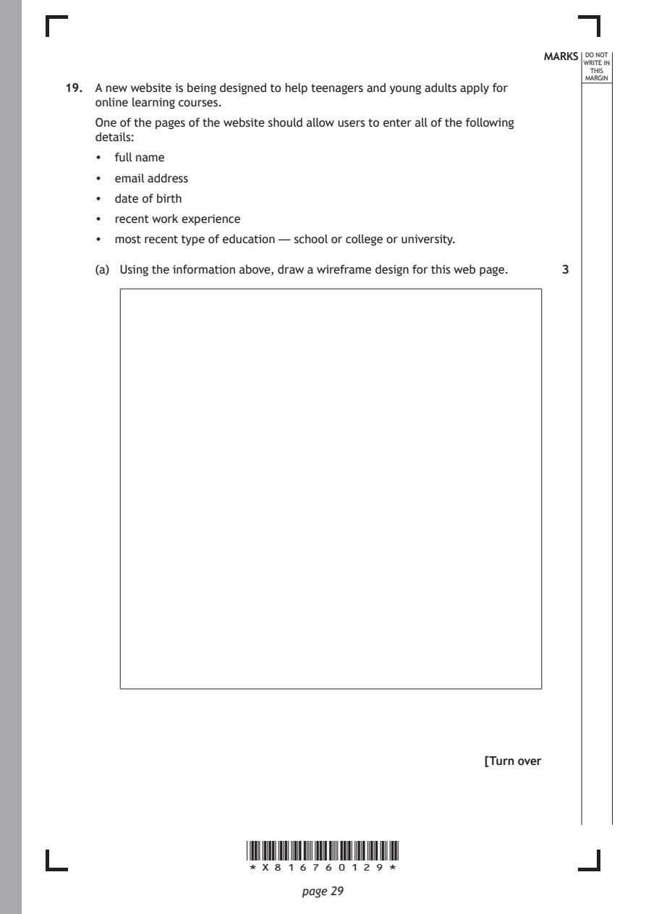
Selectable page text
MARKS DO NOT
WRITE IN
THIS
MARGIN
19. A new website is being designed to help teenagers and young adults apply for
online learning courses.
One of the pages of the website should allow users to enter all of the following
details:
• full name
• email address
• date of birth
• recent work experience
• most recent type of education — school or college or university.
(a) Using the information above, draw a wireframe design for this web page. 3
[Turn over
*X816760129*
page 29PDF page 30
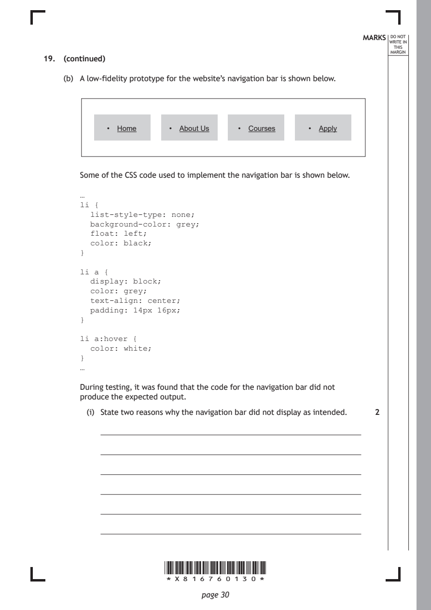
Selectable page text
MARKS DO NOT
WRITE IN
THIS
MARGIN
19. (continued)
(b) A low-fidelity prototype for the website’s navigation bar is shown below.
• Home • About Us • Courses • Apply
Some of the CSS code used to implement the navigation bar is shown below.
…
li {
list-style-type: none;
background-color: grey;
float: left;
color: black;
}
li a {
display: block;
color: grey;
text-align: center;
padding: 14px 16px;
}
li a:hover {
color: white;
}
…
During testing, it was found that the code for the navigation bar did not
produce the expected output.
(i) State two reasons why the navigation bar did not display as intended. 2
*X816760130*
page 30PDF page 31
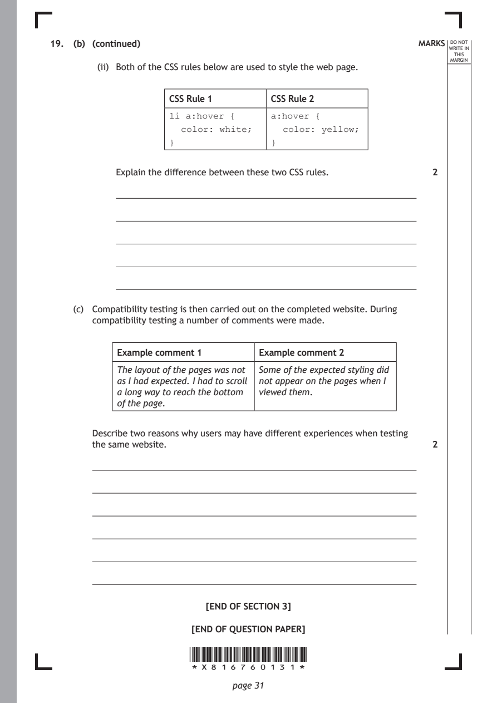
Selectable page text
19. (b) (continued) MARKS DO NOT
WRITE IN
THIS
MARGIN
(ii) Both of the CSS rules below are used to style the web page.
CSS Rule 1 CSS Rule 2
li a:hover { a:hover {
color: white; color: yellow;
} }
Explain the difference between these two CSS rules. 2
(c) Compatibility testing is then carried out on the completed website. During
compatibility testing a number of comments were made.
Example comment 1 Example comment 2
The layout of the pages was not Some of the expected styling did
as I had expected. I had to scroll not appear on the pages when I
a long way to reach the bottom viewed them.
of the page.
Describe two reasons why users may have different experiences when testing
the same website. 2
[END OF SECTION 3]
[END OF QUESTION PAPER]
*X816760131*
page 31PDF page 32
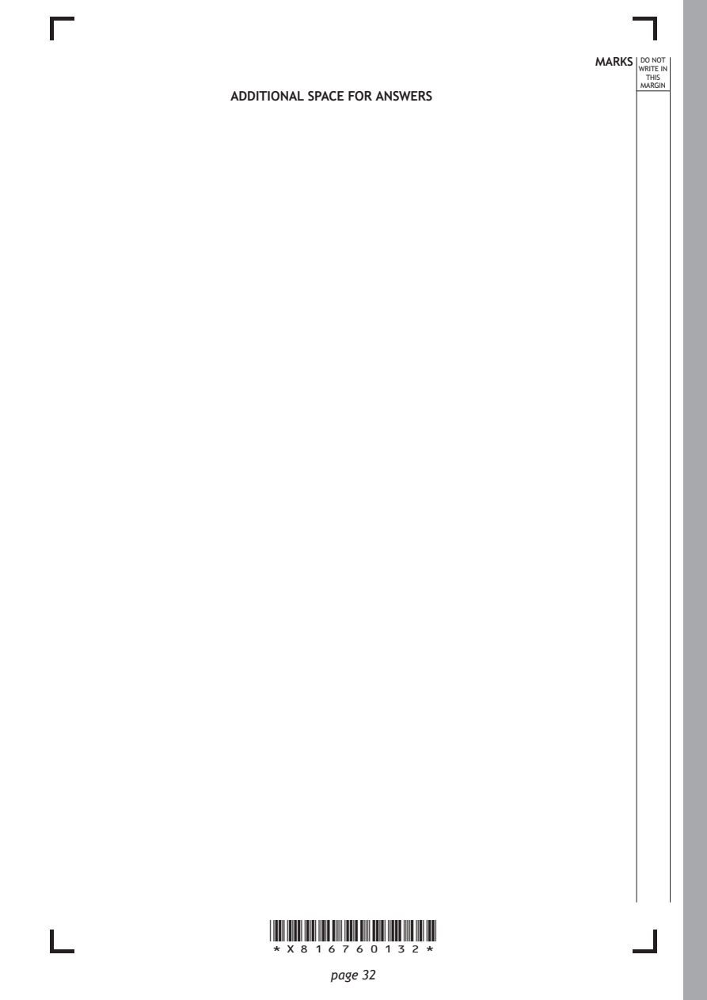
Selectable page text
MARKS DO NOT
WRITE IN
THIS
MARGIN
ADDITIONAL SPACE FOR ANSWERS
*X816760132*
page 32PDF page 33
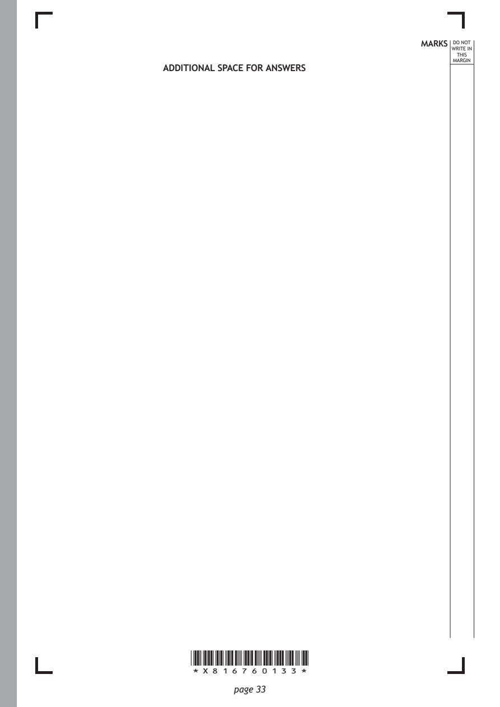
Selectable page text
MARKS DO NOT
WRITE IN
THIS
MARGIN
ADDITIONAL SPACE FOR ANSWERS
*X816760133*
page 33PDF page 34
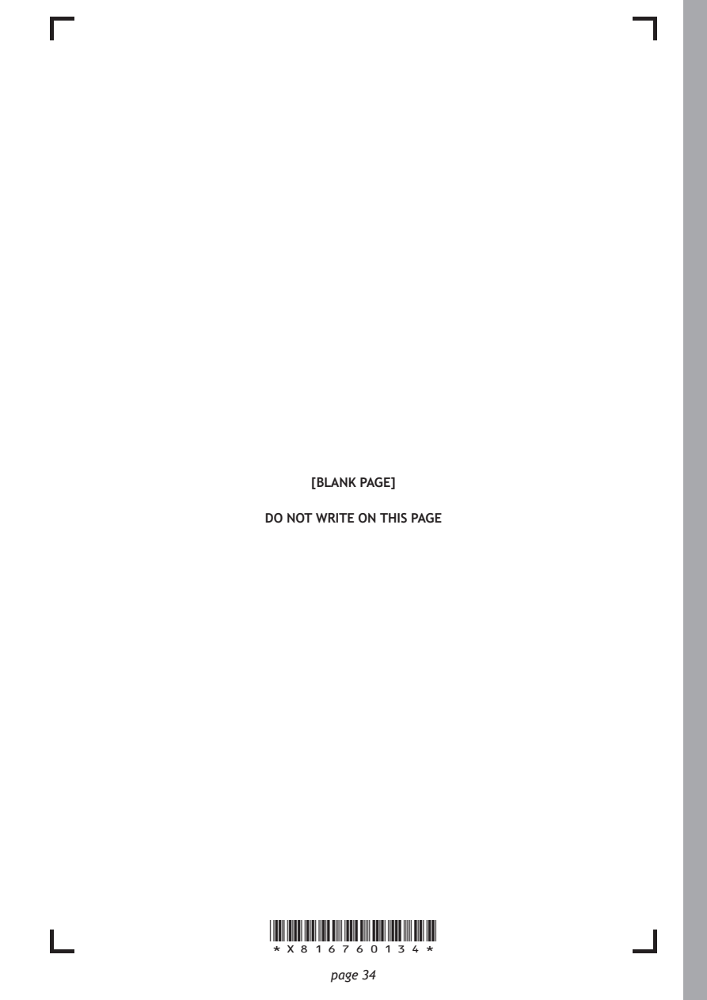
Selectable page text
[BLANK PAGE]
DO NOT WRITE ON THIS PAGE
*X816760134*
page 34PDF page 35
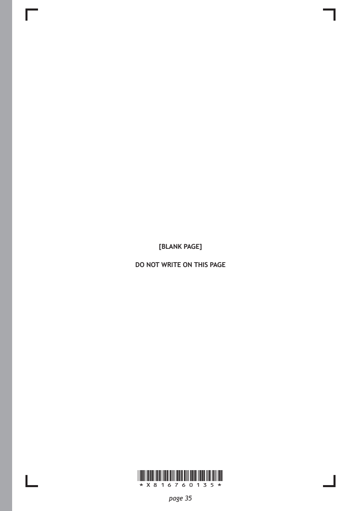
Selectable page text
[BLANK PAGE]
DO NOT WRITE ON THIS PAGE
*X816760135*
page 35PDF page 36
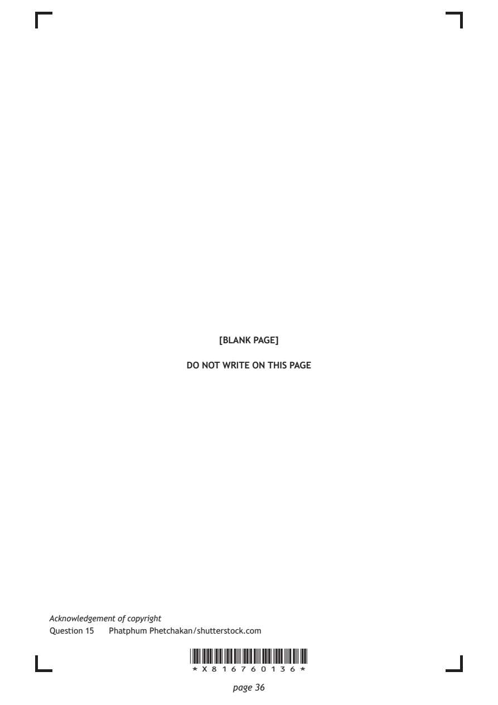
Selectable page text
[BLANK PAGE]
DO NOT WRITE ON THIS PAGE
Acknowledgement of copyright
Question 15 Phatphum Phetchakan/shutterstock.com
*X816760136*
page 36